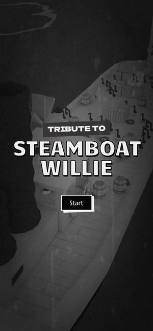

Awwwards 오늘의 사이트 2024.05먼저 보세요01Tribute to Steamboat Willie
와 포인트글자가 흔들리며 맞춰지는 제목 뒤로 오래된 흑백 필름 질감이 흐릅니다. 'Start'를 누르면 '음표를 모아 멜로디를 완성하라'는 안내와 함께 최초기 미키마우스 카툰을 직접 갖고 노는 놀이가 시작됩니다.
애니메이션박물관이라면1층 영사기 전시의 1890년대 유리필름과 메모리얼 홀의 故 신동헌 감독(1967년 애니메이션 '홍길동' 감독)을 첫 화면 주인공으로. 흑백 필름 위에서 관람객이 그림을 눌러 움직여 보는 헌정형 메인.